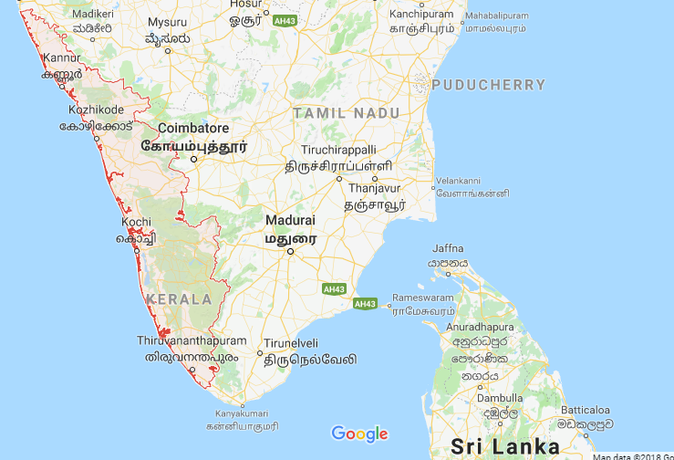

Kerala, historically known as Keralam, is an Indian state in South India on the Malabar Coast. It was formed on 1 November 1956 following the States Reorganisation Act by combining Malayalam-speaking regions. Spread over 38,863 km2 (15,005 sq mi), it is bordered by Karnataka to the north and northeast, Tamil Nadu to the east and south, and the Lakshadweep Sea to the west. With 33,387,677 inhabitants as per the 2011 Census, Kerala is the thirteenth-largest Indian state by population. It is divided into 14 districts with the capital and the largest city being Thiruvananthapuram. Malayalam is the most widely spoken language and is also the official language of the state.The region has been a prominent spice exporter since 3000 BCE. The Chera Dynasty was the first prominent kingdom based in Kerala, though it frequently struggled against attacks by the neighbouring Cholas and Pandyas. In the 15th century, the spice trade attracted Portuguese traders to Kerala, and paved the way for the European colonisation of India. At the time of Indian independence, there were two major princely states in Kerala - Travancore and Kochi. They united to form Thirukochi. The Malabar region, in the north part of present-day Kerala was under the Madras province of British India. In 1956, Kerala state was formed by merging Malabar district, Travancore-Cochin (excluding four southern taluks of Kanyakumari district), and the taluk of Kasaragod (now Kasaragod District), South Kanara (Tulunad).Kerala has the lowest positive population growth rate in India, 3.44%; the highest Human Development Index (HDI), 0.712 in 2015; the highest literacy rate, 93.91% in the 2011 census; the highest life expectancy, 77 years; and the highest sex ratio, 1,084 women per 1,000 men. The state has witnessed significant emigration, especially to Arab states of the Persian Gulf during the Gulf Boom of the 1970s and early 1980s, and its economy depends significantly on remittances from a large Malayali expatriate community. Hinduism is practised by more than half of the population, followed by Islam and Christianity. The culture is a synthesis of Aryan and Dravidian cultures, developed over millennia, under influences from other parts of India and abroad.The production of pepper and natural rubber contributes significantly to the total national output. In the agricultural sector, coconut, tea, coffee, cashew and spices are important. The state's coastline extends for 595 kilometres (370 mi), and around 1.1 million people in the state are dependent on the fishery industry which contributes 3% to the state's income. The state has the highest media exposure in India with newspapers publishing in nine languages, mainly English and Malayalam. Kerala is one of the prominent tourist destinations of India, with backwaters, beaches, Ayurvedic tourism and tropical greenery as its major attractions.
